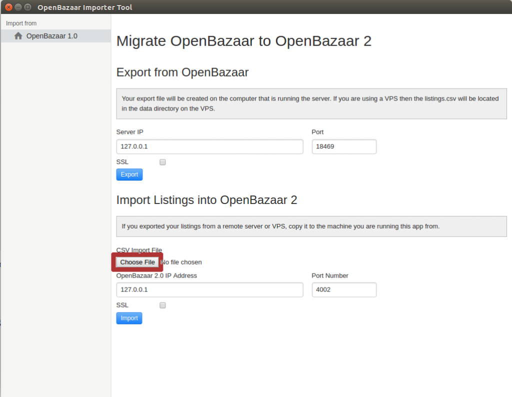

Download link for the importer tool.
OpenBazaar 2.0 has launched, and brings many improvements over the 1.0 version. These networks aren’t compatible; a vendor selling on the old network will not be able to receive orders on the new network, and vice versa. This means that 1.0 vendors need to open a new store on the new network.
Fortunately, opening a new store doesn’t mean you need to recreate all your listings. The OpenBazaar team has created a tool that allows you to export your version 1.0 listings into your new 2.0 store. This tool will move listings from version 1.0 to your 2.0 store, but nothing else. Your profile, settings, and previous reviews will not transition to the 2.0 network.
This guide is for vendors who run both version 1.0 and 2.0 stores on their own computers. This guide assumes the importer tool is run on the same computer as the OpenBazaar stores are located. If you used a VPS for either store read the additional information at the end of the article.
Step #1: Install OpenBazaar 2.0
Note: If you’ve already installed the new OpenBazaar 2.0, you can skip this step.
You can’t import your old listings into a new store without having a new store first. Visit our download page to get the latest version of the software. Open the installer and follow the instructions. After clicking “I Agree” to the Terms of Service, you’ll see your new store, looking something like the following image:
This means you’ve successfully installed your OpenBazaar 2.0 store and can proceed to the next step. Keep the 2.0 running throughout the rest of the steps.
Step #2: Install the Importer Tool
Download the importer tool and install it. Windows users need the .exe installer, OSX users need the .dmg installer, and Ubuntu users need the .deb installer. Advanced users can install from source.
You should see something like the following image:
If you see the importer tool, you can proceed to the next step.
Step #3: Find your Port Number
If you installed version 1.0 from source then your port number is 18469 by default, which is already entered in the importer tool. You can skip this step.
However, most users installed OpenBazaar with the installer download, and their ports were assigned at random. You’ll need to determine your port number in order to enter it in the next step.
There are two methods to find your port number. The first involves looking at the debug log. With the version 1.0 application running, you should see the OpenBazaar tent icon running in your system tray. Right click on the tent and you’ll see the option to “View Debug Log.” Clicking this option should open up a text file. You want to search the file for the term “RestAPI starting on” and see the results. You should find a line saying “RestAPI starting on [numbers]” and those numbers are the port number you’re looking for. If you found your port number with the method, you can proceed to the next step.
The second method is to open up the version 1.0 application and right click anywhere on the client, then hover over “View” and click “Toggle Developer Tools” as the following image shows:
You’ll then see a tool open up on the side of the OpenBazaar client. Click on the “Network” tab on the top, as highlighted in red below, then click on the refresh icon (the circular arrow on the top left of the OpenBazaar client):
When you click refresh (or click on anything in the OpenBazaar client while viewing the network tab in developer tools) you’ll see a list of new network calls being made. Click on any one of those network calls, as highlighted in red below:

Now click on “Headers” and you’ll see the details of a network call, which will tell you the port number you need. The example picture below shows where to click on the “Headers” tab and then shows where the port number is located:
In the above example, the port number is highlighted in blue: 39265. Your port number will be displayed in the same area, directly after http://localhost:[portnumber]/api/…
Note this port number and proceed to the next step.
Step #4: Open your version 1.0 OpenBazaar store and export listings
Open the version 1.0 OpenBazaar application. Once it’s running switch to the importer tool. Don’t change the Server IP, but enter the port number you found in the previous step, and don’t check the SSL box. Click on the “Export” button, highlighted in red in this image:
If you see red text with a message that says “Error: connect ECONNREFUSED 127.0.0.1:18469” or similar message, you need to make sure that your version 1.0 OpenBazaar application is running and that you entered the correct port number.
If successful, you should see a message with green text that says “The export file (listings.csv) is now available on 127.0.0.1” which means the tool has created a new CSV file with all your listing information. This file is located in the data folder of your 1.0 version (details below), not the 2.0 data folder.
You can now shut down your 1.0 version and proceed to the next step.
Step #5: Import listings into the 2.0 version
To make this step simpler, you can move the new listings.csv file from the old data folder to an easy to access folder, such as Desktop or Documents. The new listings.csv file will be located in the following folders, depending on your operating system:
Windows: C:\Users\[Username]\AppData\Roaming\openbazaar
OSX: ~/Library/Application Support/OpenBazaar
Linux: ~/.openbazaar
Copy the listings.csv file and paste it into a folder you’ll remember.
Now switch to the importer tool. Click the “Choose File” button, highlighted in red below:

Navigate to the folder you placed the listings.csv file and select the file. Next to the “Choose File” button the text should now read “listings.csv” instead of “No file chosen.”
Don’t change the OpenBazaar 2.0 IP Address field or Port Number (this port number is not random), and don’t check the SSL box.
With the 2.0 application running, click on the “Import” button, as highlighted in red below:
If you see red text with a message that says “Error: connect ECONNREFUSED 127.0.0.1:4002” or similar message, you need to make sure that your version 2.0 OpenBazaar application is running.
If successful, you’ll see some green text giving you progress messages as the importer tool does its work. When finished you should see the message “Listing import completed.” You can now close the importer tool and proceed to the next step.
Step #6: Check your new 2.0 store listings and make any necessary changes
Switch to your 2.0 application and navigate to your store page, or if already there, click the refresh icon in the top left of the client. You should now see your new listings in your store. Review them to make sure the data is correct and make any changes necessary.
Now that you’ve got your new listings in place, you should finish building your store. Go to Menu > Settings > Store and add an avatar and theme image. Fill out the About sections and let potential buyers know more about your store. The better and more professional looking your store is, the more buyers are likely to buy something from you.
Now you’re ready to sell on OpenBazaar 2.0!
Details for VPS users
If you hosted your version 1.0 store on a VPS, there are a few differences from the steps above. In step #4 you need to change the Server IP to the IP address of the VPS. If you used SSL to connect, you’ll also need to check the SSL box. After clicking “Export” your 1.0 server will now have the listings.csv file located on the VPS, not on your local computer. You’ll need to manage step #5 by pulling the listings.csv file out of the VPS OpenBazaar data folder and into your local computer running the importer tool. To do this, you can use SSH, FTP, or other file management tools. This guide might help you.
Once you have the listings.csv file you can continue the guide as normal.
Do you want to help build this with us?
Download OpenBazaar right now to start buying or selling in minutes or just see what's for sale at OpenBazaar.com.
Developers, join us on Github to contribute to this open-source project!